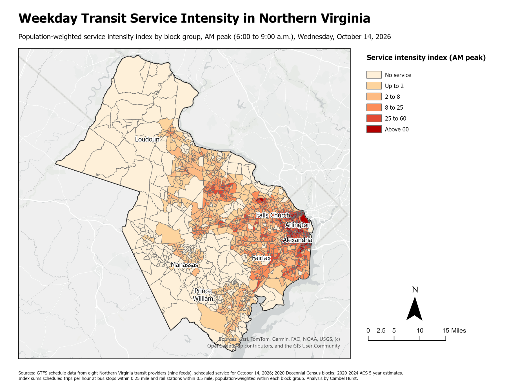
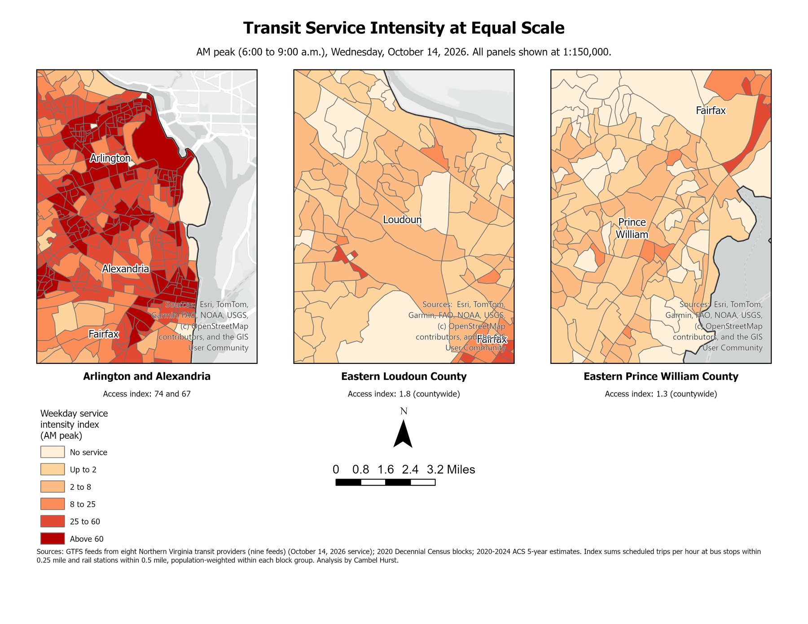
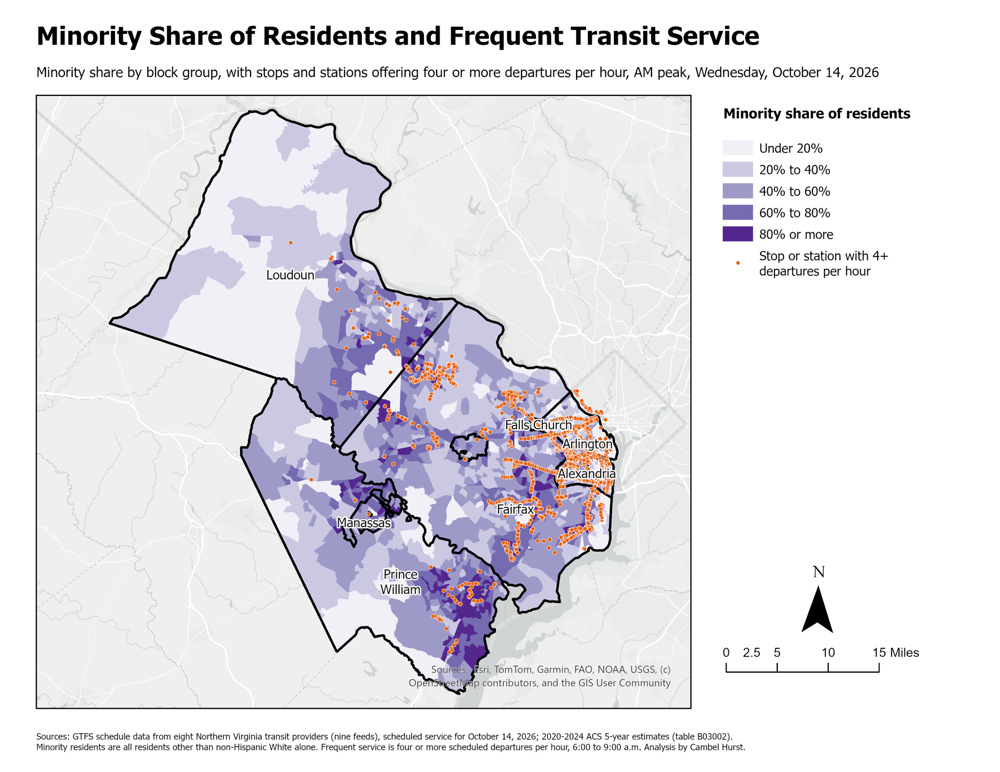

Northern Virginia Transit Access Analysis
How much scheduled weekday transit service is within walking distance of where people live, and how does it differ across jurisdictions and population groups? This analysis covers nine jurisdictions, 1,565 block groups, and about 2.56 million residents, using published schedules for Wednesday, October 14, 2026.
Key findings
- Service is concentrated in the inner jurisdictions. Arlington (73.9) and Alexandria (66.6) have access index values about 38 to 58 times those of Loudoun (1.76) and Prince William (1.27).
- Frequent service follows the same pattern. 79 percent of Arlington residents and 86 percent of Alexandria residents live near a stop with service every 15 minutes or better in the morning peak, compared with 4 percent in Loudoun and Prince William.
- Within jurisdictions, minority residents have equal or greater access than other residents in eight of nine jurisdictions.
- Across the region, low-income residents and zero-vehicle households have more access than everyone else, and minority residents and other residents are nearly identical (17.4 compared with 17.7).
- Coverage and frequency are not the same thing. The City of Fairfax has a moderate index (15.0), but only 5 percent of its residents live near frequent service.
The main divide in access is geographic rather than demographic: where someone lives in the region matters far more than who they are within their jurisdiction.
Maps



Results by jurisdiction
| Jurisdiction | Population | Minority share | Access index | Near frequent service |
|---|---|---|---|---|
| Arlington | 236,254 | 42% | 73.9 | 79% |
| Alexandria | 156,976 | 51% | 66.6 | 86% |
| Falls Church | 14,710 | 32% | 21.6 | 56% |
| Fairfax City | 25,026 | 49% | 15.0 | 5% |
| Fairfax County | 1,147,837 | 53% | 13.0 | 28% |
| Loudoun | 432,998 | 49% | 1.76 | 4% |
| Manassas Park | 16,798 | 74% | 1.52 | 0% |
| Manassas | 42,976 | 67% | 1.48 | 1% |
| Prince William | 488,880 | 62% | 1.27 | 4% |
| Study area | 2,562,455 | 53% | 17.6 | 27% |
Methods
Data. GTFS schedules from eight providers (nine feeds: WMATA Metrorail and Metrobus, Fairfax Connector, ART, DASH, CUE, Loudoun County Transit, OmniRide, and VRE), 2020 Census block populations, and 2020-2024 American Community Survey estimates.
Service. I counted scheduled departures at every stop in the morning peak and converted them to trips per hour, grouping rail platforms under their stations.
Access. For each populated Census block, I summed trips per hour at bus stops within a quarter mile and rail stations within a half mile, then averaged blocks up to block groups weighted by population. A block counts as near frequent service if a nearby stop has four or more departures per hour.
Comparisons. I compared access for minority residents, low-income residents, and zero-vehicle households with everyone else, both across the region and within each jurisdiction.
Limitations. The index measures service intensity rather than trips to destinations, uses straight-line distances, and understates commuter bus and VRE service that riders reach by car. The full report covers these in detail.
Tools and disclosure
R (tidytransit, tidycensus, sf, dplyr), ArcGIS Pro, GTFS, and Census data.
I used Claude, an AI assistant made by Anthropic, throughout the project. Claude wrote the R scripts to my specifications, so that they carried out the methodology I designed, retrieved the GTFS schedule data, and accessed the WMATA API. I reviewed and tested the code to confirm that it works. Claude also helped move the results from R into ArcGIS Pro for mapping. Using AI made the work faster and easier than standard methods would have, and I am responsible for the analysis, its interpretation, and the findings.